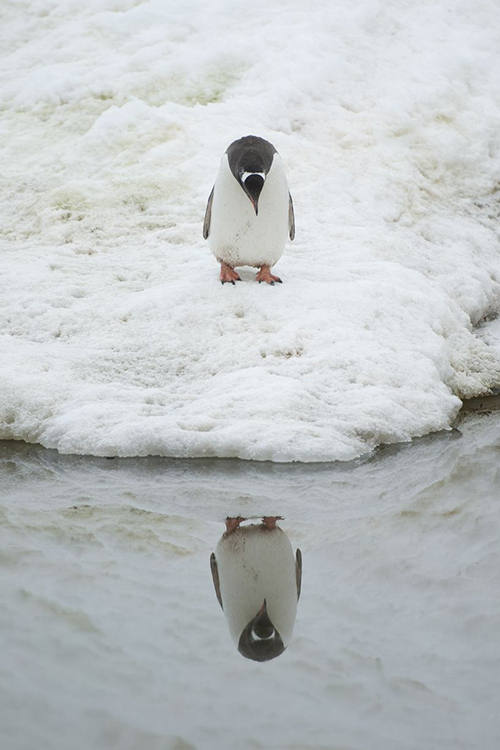

Letterontwerp als medium voor visuele expressie:
Ontstaan vanuit een bepaalt doel door een ontwerp te versterken of door zelf het concept te zijn.
1 — INTRODUCTIE
1.1 — Onderwerp en fascinatie
1
Grafisch Ontwerp is een erg complex en dynamisch onderwerp, het is een verreikend beroep met een brede invloed die het uitvoert met omvangrijke en creatieve vaardigheden. Door de complexiteit die het heeft en de omvangrijkheid is het daarin tegen wel een spannend en uitdagend beroep, maar zonder enige kennis van de ideeën en processen uit de geschiedenis die belangrijk zijn voor de basis van Grafisch ontwerp is het een moeilijk te begrijpen onderwerp waarbij veel mensen geen idee hebben wat het eigenlijk inhoud.
Om Grafisch Ontwerp beter te leren begrijpen moeten we ons richten tot de rijke history die het reeds heeft ontwikkeld. Voor Grafisch Ontwerp is het van belang om te kijken naar de Bauhaus en de modernistische stijl omdat ze beschouwd worden als de kern van het hedendaagse Grafisch Ontwerp en deze stromingen waren verantwoordelijk voor een ware ontwerp revolutie. Het waren deze stromingen die de functionaliteit hoog in het vaandel hadden, en waren ervan overtuigd dat design een betekenis en een doel nodig had en niet puur op stijl kon functioneren om succesvol te zijn. Volgens de modernistische stijl was er al genoeg oppervlakkig werk en de modernisten vonden dat zij de taak hadden om meer diepgang te geven en ontwerp te laten functioneren naar behoren op deze principes functioneert hedendaags Grafisch ontwerp nog steeds. Dit is natuurlijk een lastige, ingewikkelde maar vooral ook uitdagende taak die door de komst van de digitale technologie een bredere horizon dan ooit tevoren heeft gekregen en het heeft er ook voor gezorgd dat ons werkveld zichzelf net zo breed uitstrekt. Vanaf stromingen als de Art and Craft, bauhaus en postmodernisme zijn er invloeden die hebben meegespeeld in de ontwikkeling van hedendaags Grafisch Ontwerp. Door de opkomst van het modernisme die voor een betere en andere economische situatie zorgde was er ruimte voor ontwikkeling in de sociale en politieke gebieden, tegelijkertijd was er een grote groei in de industrialisatie met machines en fabrieken. Dit had een grote invloed op de kunstwereld en de architectuur maar ook de literatuur veranderde wat effect had op de typografie en het gebruik daarvan.
Dit is waar voor mij een interessante periode aanbreekt waarbij ik verder wil in gaan op de ontwikkelingen van typografie en letterontwerp. Typografie is een term die nauw verbonden is met grafisch ontwerp, het is hulpmiddelen en een toepassingen die veel functionaliteit heeft binnen grafisch ontwerp. Grafisch ontwerp is een beroep dat zich manifesteert rondom communicatie en bij communicatie wordt informatie met elkaar gedeeld door middel van bijvoorbeeld geluid zoals bij spraak en toon en door middel van vorm zoals beeld, symboliek en tekst. Bij tekst hebben we het altijd over de inhoud maar wat ik er altijd interessanter aan vind is de vorm, vooral de visuele expressie van de letters waarmee het opgemaakt is. Tegenwoordig zijn letters in alle soorten en maten te vinden experimentele display letters tot super families met soms meer dan 50 verschillende classificaties van het zelfde lettertype. Vaak is er de vraag zijn er nog nieuwe lettertypes nodig want er zijn er al zo veel dan zeg ik altijd dat letters de inhoud van een tekst dragen maar dat het ook een visuele representatie heeft. Zolang we geen mondiale cultuur hebben waarin iedereen dezelfde waardes deelt, zolang er verschillende mensen en groepen zijn met verschillende waardes en doelen zullen zij zich ook willen presenteren met een visuele cultuur. De geschiedenis laat zien dat de perspectieven van mensen en gemeenschappen veranderen en daarom zullen zal er altijd vraag blijven naar nieuwe en passende designs en passende communicatie waarvoor passende lettertypes nodig zullen zijn.
Dat is waar het bij grafisch ontwerp om draait een concept op een passende manier laten communiceren en typografie en letter ontwerp is daar een medium voor. Een ontwerp maken dat geschikt is voor een bepaald doel, met een specifieke bedoeling. Daarbij moet begrepen worden waarom het gemaakt wordt en wat er gemaakt word. Er op lettend of dit past in de uitkomst die er mee bereikt moet worden. Niet alleen maar een stijl toepassen maar opzoek gaan naar een oplossing voor het probleem en dat tackelen door de juiste bijvoorbeeld “typografische” toepassing te ontwerpen.
1.2 — Onderzoeksvraag en opbouw.
Typografie is iets waar we elke dag mee geconfronteerd worden al is het het lezen van de krant of als we online gaan, het geschreven woord opent een wereld voor ons en brengt informatie en dit doet het al generaties lang. Typografie is een dienaar die ons helpt met communicatie van inhoud met een breed scala aan onderwerpen. Nu is het zo dat de bijzonderheden van typografie veel verder gaan dan de content van een text, de esthetische kwaliteit van een lettertype wordt bereikt door een harmonieuze relatie tussen vorm, inhoud en doel.
Die esthetische kwaliteit kunnen we bereiken door te kijken naar het ontwerp van letters en lettertypes. Letterontwerp behandelt het ontwerpen van letters en is een zeer gespecialiseerde discipline, het ontwerp van een lettertype representeert de zoektocht naar de juiste vorm om taalkundige boodschappen te kunnen verkondigen. Dit is interessant want ik vind dat letterontwerp geen onderwerp van toeval moet zijn maar het moet ontstaan vanuit een bepaalt doel door een ontwerp te versterken of door zelf het concept te zijn. Dit kan worden bereikt door vele verschillende experimentele oplossingen, maar ook door middel van traditionele ontwerp conventies waardoor het erg interessant is om in deze materie te duiken.
Tijdens mijn studie Grafisch ontwerp aan kunstacademie (de Koninklijke academie van de Beeldende Kunsten) heb ik ontdekt dat mijn manier van werken en mijn visuele taal door een aantal beslissende handelingen en principes word bepaalt. Dit is niets nieuws denk ik want veelal is het zo dat grafisch ontwerpers een werkmethode hanteren waar zij zichzelf comfortabel bij voelen, een werkmethode die ontwikkelt vanuit een speciale interesse of een talent waarmee de ontwerper zichzelf kan representeren en in de meeste gevallen is hiermee ook een unieke stijl te ontwikkelen. Dat is waar bij mij de interesse voor letterontwerp is ontstaan, het sprak mij aan omdat het een rijke historie heeft en omdat het bijzonder functioneel is. Daarom heb ik mijzelf de vraag gesteld: Wat kan letterontwerp toevoegen aan de visuele expressie van een ontwerp concept? Om die vraag te beantwoorden ben ik in dit uiterst interessante onderwerp gedoken en probeer ik mijn kennis over deze discipline aan te vullen alvorens een conclusie over mijn vraag te kunnen trekken.
Dit scriptie is opgebouwd uit ……..
2 — DE VORMEN VAN LETTERS.
2.1 — Letterontwerp: achtergrond en Functionaliteit in grafisch ontwerp.
Letters hebben net als grafisch ontwerp een rijke historie en in de loop der tijd heeft het verschillende vormen aangenomen. Dit begon analoog met pen of een kwast. Net als op school leer je eerst schrijven, door die oefeningen en training kunnen we beter begrijpen waarom lettervormen de vormen hebben die ze over het algemeen hebben. Op een gegeven moment is dit proces door technologie andere vormen gaan aannemen, schrijven werd vervangen door drukken er kwam een standaardisatie van de lettervorm omdat letters ontworpen moesten worden voor de drukpers. Eerst leken deze letters nog veel op de lettervormen die ontstaat door het schrijven met de brede pen veelal gebruikt bij het kalligraferen, maar door nieuwe ontwikkelingen bedacht door Johannes Gutenberg voor het drukken ontstond er een nieuw materiaal; losse drukletters. Door dit nieuwe materiaal ontstonden ideeën over de mogelijkheden van letters en kreeg het beroep letter ontwerper een nieuwe betekenis, goed ontworpen lettertypes waren nu nodig. Ontwerpers als Nicolas Jenson en Francesco Griffo staan bekend om de ontwerpen van de voor ons bekende romeinse letter vormen waarbij ze werden geïnspireerd door de romeinse steengravure. De “romein” een schreef letter domineert heel lang de typografie tot aan het begin van de 20ste eeuw als het moderne tijdperk aanbreekt.
De ideeën van De Stijl en Bauhaus zijn begin 20ste eeuw overgewaaid naar alle vormen van typografie, waarbij werk experimenteel is, zich puur op functionaliteit richt of waarbij het conceptuele vormen aanneemt. Letterontwerp stond vaak op de achtergrond omdat het meestel niet de intentie heeft gehad om op de voorgrond te staan, Deze periode is voor letterontwerp een ware revolutie, letterontwerp word gebruikt als vorm van zelfpresentatie bij ontwerpers, ontwerpers creëren een eigen stijl een kenmerk zodat ze opvallen en eruit springen. De letterontwerper geeft zichzelf een hogere rol en letterontwerp functioneert steeds meer als medium voor visuele expressie en ontwerp concepten.
In deze periode staan er ontwerpers op zoals de Duitser Peter Behrens, die met toonaangevende nieuwe en opwindende toepassingen van typografie bezig is. Het is de periode waarin de schreefloze letter zijn intrede doet. Er ontstond een Typografische hervorming. Rond de eeuwwisseling ontstond er veel meer interesse in het gebruik van schreefloze lettertypes, in Duitsland noemden men schreefloos: grotesk. Een veelgebruikte en toonaangevend lettertype dat rond die tijd wordt ontwikkeld is de Akzidenz Grotesk, een lettertype met meerdere gewichten en smallere en bredere lettervormen in een letter familie. De gebruiker kon nu contrast en nadruk met een lettertype toepassen, dit was een grote stap in eenheid en gesystematiseerde letter families. Deze nieuwe typografische toepassingen waren bijzonder handig voor grafisch ontwerpers en hielp hen enorm met typografische communicatie.
Vanaf die periode tot nu zijn de ontwerpen van letters alle kanten opgeschoten en van vele kanten benaderd en toegepast, maar de visuele expressie van de letters hebben altijd een sterke invloed gehad vanuit een periodiek oogpunt, de kritische reden en vanuit een esthetisch kwaliteit.
Test test test

image description some info blablabla
1.Bennett, Colin J. ‘In Defense of Privacy: The Concept and the Regime’, Surveillance & Society 8.4 (2011): 485–496. ↵
2.Deleuze, G. and F. Guattari. A Thousand Plateaus: Capitalism and Schizophrenia,, London: Continuum,2009 (1987). ↵
3.Deleuze, G. and F. Guattari. A Thousand Plateaus: Capitalism and Schizophrenia,, London: Continuum,2009 (1987). ↵